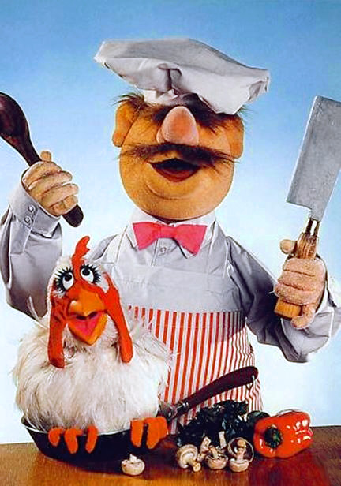

Your organization could use a cookbook
That is… if you don’t have one yet of course.
A self-service effort is not complete without proper documentation. You could store that inside the repository with the code that makes up the service, but that could make it harder to find. And what if you have a bunch of services that all have their own docs? It’ll be completely scattered. To make knowledge easily find-able, and even searchable, a central knowledge base is the solution. In other words… a cookbook!

Everyone’s cookbook
A cookbook is only really worth something if it contains recipes. So instead of a single person writing this entire cookbook, anyone with a good contribution should be able to add it to the cookbook. Storing everything in a code repository using git is the most obvious way but that will raise the bar a little bit for non-technical staff.
From my own experience, these cookbooks generally start out as engineering documentation but product management and design definitely have a place in a cookbook as well!
Cookbooks also play a key role in golden paths. Golden paths into production should be very well documented so that people using them to ship their products can do most of the troubleshooting themselves before they might start reaching out to others for help. If you already have some standardization developed somewhere, centralizing the knowledge and solutions around them is great content to add to a cookbook.
The cookbook works both ways, it’s for everyone, but also by everyone.
Accessibility
As far as easy-of-use goes, it should be searchable because once the cookbook starts filling up, it’s going to become harder to just “know” where everything is. Structure is very important. Have broad subjects that content can live under such as Platform tools, Developer Services, etc. It’ll depend a bit on the kind of content that gets added.
As mentioned, everyone should be able to contribute, but we still want nicely formatted content. Writing content in Markdown is a good choice and is also very easy to learn if you’ve never written anything in Markdown. One of the top level recipes should definitely be one that explains how to write content, and how to contribute.
Conventions
It’s helpful to establish some conventions around the content that goes into the cookbook. Writing styles vary from person to person and having everything in the same format will help a lot with readability.
One approach I’ve seen work very well in practice only describes to kinds of content:
- Guides
- Recipes
There’s also room for other content but it should generally provide guidance and solutions.
Guides
Guides describe the broad strokes around a certain topic and why the topic is important. For example, a guide about your CI/CD setup will explain why CI/CD is a valuable tool for teams and the benefits they get from it. It should also contain explanations for the various conventions and guardrails put in place in your solution and provide an overview of existing solutions that can be found in individual recipes.
Recipes
Where guides offer broad descriptions and explanations about specific topics, recipes are very solution-focused. Each recipe covers a single solution in detail. A good way to write recipes is starting with the problem the specific recipe will cover, followed by a detailed solution. Solutions can come in the form of steps to follow, code samples, tools to install. Everything that is need to accomplish the given solution.
Attracting content
You should already have at least some stuff in your cookbook before you start marketing it as a good resource for others but showcasing and getting the word out is crucial to adoption.
Having something set up for easy content hosting is one thing, getting people excited to contribute and see the benefits of the centralized knowledge is another. Showcase what you have on internal platforms like sprint review sessions, guild meetings, newsletters, slack channels, whatever you have at your disposal.
Once you get the ball rolling you’ll start seeing folks adding content in no time. As time goes on and more content becomes accessible, the cookbook should become the one place where people start looking for solutions.
Curation and maintenance
As with any product, it will need to be maintained. Not just in a technical sense but also content. The organization will change, services and applications will change, and so the recipes and guides around these things must change with them.
There might also be content that just does not belong in the cookbook. Highly specific stuff that only concerns a specific team could end up creating confusion instead of providing useful solutions because whatever is described only works for that specific team. Content should provide something that any team can benefit from.
From time to time content will need to be reviewed for relevancy and correctness to make sure that whatever is described is still applicable and the solutions actually work. If people run into stuff that doesn’t work as described, the cookbook quickly loses its value.
Setting up your own cookbook
There are a few ways to go about this, depending on the effort you want to put into the engineering work that goes into your organizations cookbook. It could be as easy as setting up a Wiki on something like GitLab, GitHub or whatever you use in your organization.
Something a little bit more polished and more accessible (and my tool of choice) is mkdocs-material. This is a static content generator that turns markdown files into a documentation website and adds a whole host of features such as search, outlines, menu structures and theme support.
The next step up with be a full blown content management system (e.g Wordpress, Wagtail, etc). These can give you even more in the way content is presented but also come with a additional technical overhead.
There’s some pro’s and con’s to all of the possible setups, it’ll depend on what you can/want to support. My personal advice: start out with something that is easy to maintain and deploy (such as mkdocs) and go from there, as long as you own the content itself, there’s always the possibility of switching to some other form of hosting.
A cookbook can work on various scales. A big central cookbook is the better option but a team with a large portfolio of services could set up their own cookbook to manage documentation as well.
So with all this, you can start centralizing all that knowledge that is scattered around your organization.